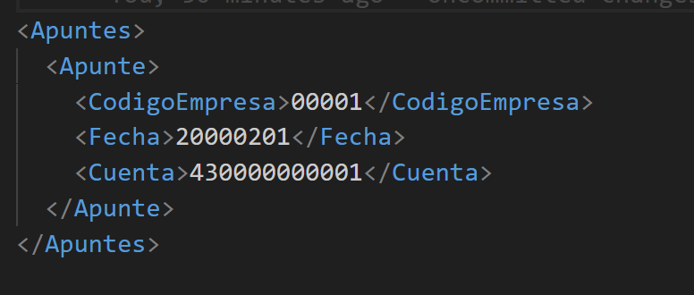

Importazione programma di contabilità
1. Obiettivo
Stabilire i requisiti tecnici necessari affinché ENBLAU possa generare file compatibili con il programma di contabilità, utilizzando la trasformazione dei dati tramite XSLT ed esportazione in formati specifici, con le codifiche accettate.
2. Requisiti generali
2.1. Formato di Input
- Il sistema esterno dovrà generare file in formato XML come base per la trasformazione.
- Il file XML deve rispettare la struttura stabilita nello schema XSD (se applicabile).
- Deve essere fornito un protocollo chiaro di mappatura dei campi.
2.2. Trasformazione
- La trasformazione dell'XML in formato di importazione sarà realizzata mediante un file XSLT fornito dal fornitore o sviluppato internamente.
- Il file XSLT deve rispettare la specifica 1.0 o 2.0 in base alla compatibilità con il motore XSLT del sistema.
2.3. Formato di esportazione
- Il risultato della trasformazione deve essere generato in uno dei seguenti formati, in base a quanto definito per ciascun tipo di operazione contabile:
| Tipo di File | Descrizione |
|---|---|
.dat |
Formato di testo strutturato |
.txt |
Testo delimitato (es. tab, virgola) |
.xml |
Struttura XML compatibile |
.xlsx |
Foglio di calcolo (Excel) |
2.4. Codifica del testo
- La codifica dei file deve essere una delle seguenti, in base al tipo di file:
| Codifica | Raccomandato per |
|---|---|
| ANSI | .txt, .dat vecchi |
| UTF-8 | .xml, .txt moderni |
| UTF-16 | .xml con caratteri speciali |
| UNICODE | Generale per file multilingua |
3. Protocollo di integrazione
3.1. Link del template XSLT
Il fornitore del sistema contabile dovrà fornire il file XSLT base e la documentazione con il protocollo con il formato del file per eseguire la trasformazione.
3.2. Specifiche di Mappatura dei Campi
Deve essere fornito un documento che dettagli:
- Nome del campo nel sistema di origine
- Posizioni
- Lunghezza (caratteri)
- Tipo di dato (numerico, testo, data)
- Formato richiesto (es:
dd/MM/yyyy,#,##0.00, ecc.)
Esempio di tabella di mappatura:
Di seguito si dettagli la struttura prevista per il file di importazione secondo il Tipo di registro = 0, corrispondente a Registrazione di Scritture senza IVA.
| Posizioni | Lunghezza (caratteri) | Descrizione del Campo | Commenti |
|-----------|----------------------|------------------------|--------------------------------------------------------------------------|
| 1 | 1 | Tipo di Formato | Costante `5` |
| 2 a 6 | 5 | Codice azienda | Valori tra `00001` e `99999` |
| 7 a 14 | 8 | Data registrazione | Formato `aaaammgg` (Esempio: 1 febbraio 2000 → `20000201`) |
| 15 | 1 | Tipo di Registro | Costante `0` |
| 16 a 27 | 12 | Conto | Livello 6 a 12. Se il conto non esiste, verrà creato automaticamente. |
Note:
- Questo formato deve essere generato come file di testo semplice (
.txto.dat) con codifica ANSI. - I campi devono occupare esattamente le posizioni indicate. Non devono esserci delimitatori.
- Tutti i record devono rispettare la struttura a lunghezza fissa per essere validi.
4. Trasformazione da XML con XSLT
La struttura precedente può essere generata da un file XML di input, trasformato con un template XSLT. Si raccomanda che il file XML abbia i seguenti nodi minimi:

4.1. Esempio di File Generato
Di seguito si mostra un esempio di riga generata per il file .dat con formato a larghezza fissa secondo i campi definiti:
-
Valori di esempio:
- Tipo di Formato:
5 - Codice Azienda:
00001 - Data Registrazione:
20250728(28 luglio 2025) - Tipo di Registro:
0 - Conto:
430000000001
- Tipo di Formato:
-
Risultato nel file
.dat:
500001202507280430000000001
-
Dettaglio per sezioni:
Posizioni Contenuto Descrizione 1 5Tipo di Formato 2 a 6 00001Codice azienda 7 a 14 20250728Data registrazione 15 0Tipo di Registro 16 a 27 430000000001Conto
⚠️ Importante!
- Non si devono includere separatori, spazi aggiuntivi, né interruzioni di riga tra i campi.
- Ogni riga rappresenta una registrazione. Se ci sono registrazioni multiple, devono essere su righe separate, una per registrazione.
-
Esempio con registrazioni multiple:
500001202507280430000000001
500002202507280410000000010
500003202507280460000000050
5. Validazioni preliminari
- Il file XML deve superare la validazione strutturale (ben formato e, se applicabile, valido contro XSD).
- L'output dell'XSLT deve essere verificato per assicurare la compatibilità con il formato di importazione contabile.
6. Processo di importazione ed esportazione da ENBLAU
-
Scarica i due file .xls (vendite e acquisti) forniti da Endades, salvali nel seguente percorso: Enblau Documenti\Documenti\Contabilità. (Raccomandiamo questa posizione perché è una cartella condivisa). Se la cartella Contabilità all'interno di Documenti non esiste, creala.

-
Apri ENBLAU e vai a:
-
Vendite → Documento di vendita → Esporta → Contabilità.

-
-
Si aprirà una finestra di Contabilità.
- Fai clic su Aggiungi una riga.
-
Si aprirà l'esploratore file per selezionare il percorso dove si trova il file esempio: transform_ventas.xls.

-
Verrà generata automaticamente una riga con il nome Contabilità 1 (puoi modificarlo, per esempio, Contabilità Vendite).
- Seleziona i parametri:
- Estensione: .dat, .xlsx, .txt o .xml.
- Codifica: ANSI, UNICODE, UTF-8 o UTF-16.
-
Verrà mostrato il percorso dove sarà esportato il file nel formato dell'estensione scelta.

-
Poi Esporta il file:

- Nel percorso di esportazione (in questo caso, lo stesso del file di esportazione), vedrai che è stato generato un file con le informazioni della fattura di vendita.
- Se hai qualche filtro applicato nell'elenco dei documenti di vendita, appariranno solo i dati che soddisfano quel filtro.
-
Il file esportato avrà il formato secondo l'estensione selezionata e il file .xsl che applica la trasformazione del file (nel percorso file di esportazione). Esempio:

-
Una volta esportato il file nel formato corretto da ENBLAU, il passo successivo è importarlo nel programma di contabilità che state utilizzando.
Note
- Qualsiasi modifica nel formato sorgente XML o nella struttura del file XSLT deve essere documentata e validata prima di essere implementata in produzione.
- È consigliabile mantenere un controllo di versione sia degli XSLT che degli schemi XML.
 Español
Español
 English
English
 Italiano
Italiano
 Português
Português